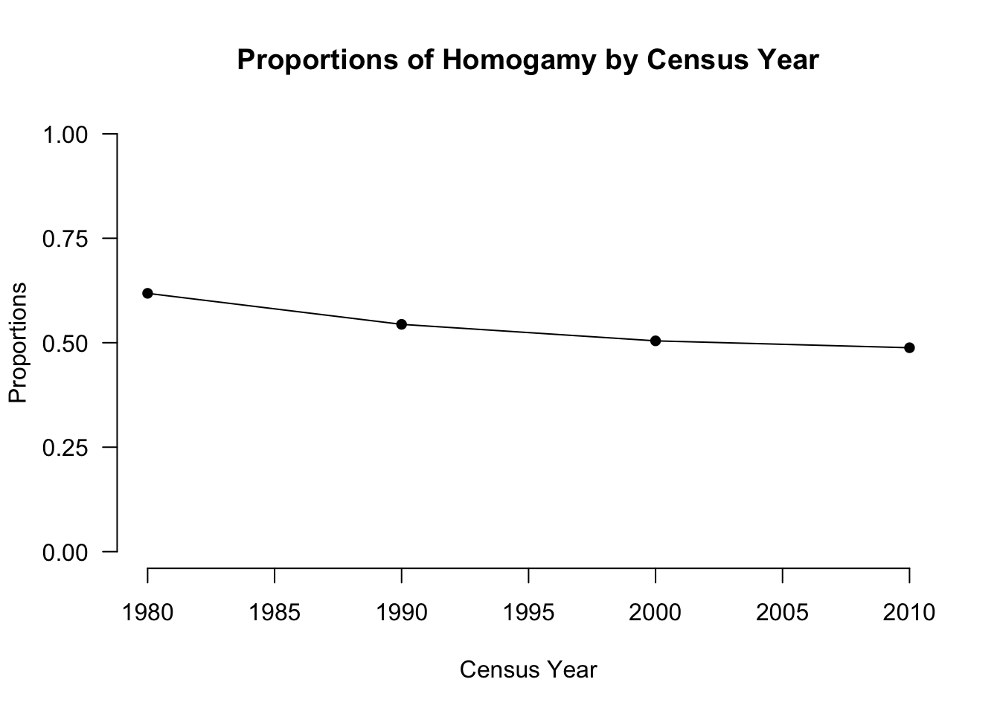
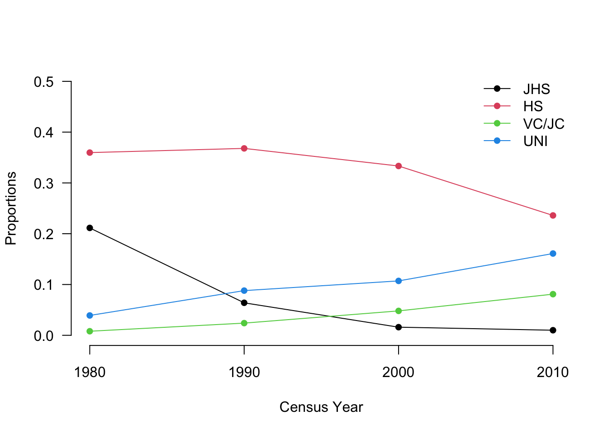

Chapter 5 Data Visualization
Rには極めて多彩なグラフの描画機能が搭載されている。そのため、R上で行なった処理結果を例えばExcelなどにコピペしてグラフを作成するのではなく、ぜひRの内部でグラフの描画まで完結させることを強く推奨する。昨今はtidyverseパッケージの一部であるggplot()を用いる方法がRコミュニティの中では優勢であるが、以下ではbase環境の中で伝統的に用いられてきた関数に基づいて説明する。
5.1 棒グラフ
棒グラフはbarplot()で作成できる。先に作成した、調査年ごとの同類婚の比率が格納されたPropDiag_byCensusを引数として渡すと、
PropDiag_byCensus## CensusYear
## EduW 1980 1990 2000 2010
## JHS 0.211422846 0.064 0.01601602 0.010
## HS 0.359719439 0.368 0.33333333 0.236
## VC/JC 0.008016032 0.024 0.04804805 0.081
## UNI 0.039078156 0.088 0.10710711 0.161barplot(PropDiag_byCensus)
のように、デフォルトの設定では積み上げ棒グラフが描画される。このままでは論文にそのまま掲載できるような水準の体裁になっていないが、例えば以下のようにコードを書き加えれば（幾分）見栄えは向上する。
barplot(PropDiag_byCensus,
ylim = c(0, 1),
axes = FALSE,
legend = rownames(PropDiag_byCensus))
axis(2, las = 1)
mtext("Census Year", side = 1, line = 3)
mtext("Proportions", side = 2, line = 3)
title("Proportions of Homogamy, by Education and Census Year")
積み上げ棒グラフではなく、調査年・学歴別に棒グラフを描きたい場合は、beside = TRUEをオプションに加えばよい。
barplot(PropDiag_byCensus, beside = TRUE,
ylim = c(0, 1),
axes = FALSE,
legend = rownames(PropDiag_byCensus))
axis(2, las = 1)
mtext("Census Year", side = 1, line = 3)
mtext("Proportions", side = 2, line = 3)
title("Proportions of Homogamy, by Education and Census Year")
5.2 折れ線グラフ
折れ線グラフはplot()あるいはmatplot()を用いて描画できる。plot()に最低限必要な引数はx軸とy軸に対応するベクトルである。例として、調査年ごとに同類婚が占める割合を折れ線グラフにしてみよう。
# 調査年ごとに同類婚の合計比率を算出
PropHomg <- apply(PropDiag_byCensus, 2, sum)
PropHomg## 1980 1990 2000 2010
## 0.6182365 0.5440000 0.5045045 0.4880000# 折れ線グラフを描く
plot(x = seq(1980, 2010, 10), #"x="は省略してもよい
y = PropHomg, #"y="は省略してもよい
type = "o",
pch = 16,
xlim = c(1980, 2010),
ylim = c(0, 1),
ann = FALSE,
axes = FALSE)
axis(1)
axis(2, at = seq(0, 1, 0.25), las = 1)
mtext("Census Year", side = 1, line = 3)
mtext("Proportions", side = 2, line = 3)
title("Proportions of Homogamy by Census Year")
plot()の中で指定した引数について少しだけ補足すると以下の通りである。
type：線と点のどちらをプロットするか、あるいはその両者をプロットするかpch：点（マーカー）の種類
typeとpchの種類についてはplot()のヘルプページを参照されたい(コンソール画面に?plotと入力すればよい)。
matplot()はplot()の拡張版で、引数yに行列を指定できる。例えば、学歴別の同類婚がそれぞれ全夫婦に占める割合の変化をプロットしてみよう。
matplot(seq(1980, 2010, 10), t(PropDiag_byCensus),
type = "o",
lty = 1,
pch = 16,
xlim = c(1980, 2010),
ylim = c(0, 0.5),
ann = FALSE,
axes = FALSE)
axis(1, at = seq(1980, 2010, 10))
axis(2, at = seq(0, 0.5, 0.1), las = 1)
mtext("Census Year", side = 1, line = 3)
mtext("Proportions", side = 2, line = 3)
legend("topright",
rownames(PropDiag_byCensus),
lty = 1,
pch = 16,
col = 1:4,
bty = "n")